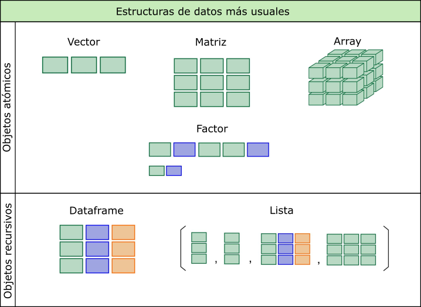

Qué es R?
El sitio oficial r-project.org1 dice que “R es un entorno de software libre para gráficos y computación estadística. Se compila y se ejecuta en una amplia variedad de plataformas UNIX, Windows y MacOS.”.
Profundizando en su descripción podemos decir, más técnicamente, que es un lenguaje de programación interpretado, orientado a objetos, multiplataforma y open source aplicado al manejo de datos estadísticos.
A continuación detallamos cada parte de la definición:
R es un lenguaje de programación estadístico
Si bien posee un entorno y se puede utilizar como calculadora avanzada o para simulación, no deja de ser elementalmente un lenguaje de programación, con sus estructuras y reglas de sintaxis, que posee una gran variedad de funciones desarrolladas con fines estadísticos.
R es un lenguaje Orientado a Objetos
Implementa los conceptos de la programación orientada a objetos y esto le permite ofrecer simpleza y flexibilidad en el manejo de datos. En R todo con lo que trabajamos son objetos: las variables, funciones, datos, resultados, etc. que pueden ser modificados por otros objetos
R es un lenguaje interpretado
No es necesario compilar los scripts de programación para construir ejecutables sino que directamente se ejecutan por medio del intérprete que R instala y devuelve resultados de forma inmediata.
R es multiplataforma (corre en Linux, Windows y Mac)
Se puede instalar en diferentes sistemas operativos como Linux, Windows y Mac. En todos ellos funciona de la misma manera, es decir que nuestros scripts pueden correr en cualquier plataforma sin cambiar nada de ellos.
R es Open Source y se distribuye bajo licencia GNU - GPL
Esto quiere decir que se distribuye gratuitamente bajo licencia GNU (General Public License) – GPL y que los usuarios tienen la libertad de usar, estudiar, compartir (copiar) y modificar el software.
Historia del lenguaje
R es un sistema que fue desarrollado a partir del lenguaje S que a su vez tiene sus orígenes en Bell Labs de la AT&T (actualmente Lucent Technologies) de mediados de la década del ’70. Posteriormente, S fue vendido y dio origen a una versión propietaria denominada S-Plus que es comercializada por Insighful Corporation.
En 1995 dos profesores de estadística de la Universidad de Auckland, en Nueva Zelanda Ross Ihaka2 y Robert Gentleman3, iniciaron el “Proyecto R”4, con la intención de desarrollar un programa estadístico inspirado en el lenguaje S pero de dominio público.
Aunque se dice que R es un dialecto de S existen diferencias importantes en el diseño de ambos lenguajes.
El software está desarrollado en lenguaje C++ con algunas rutinas agregadas en Fortran) y su nombre se debe a la letra con la que inician los nombres de pila de sus autores (Ross y Robert).
Actualmente R es mantenido por un grupo internacional de desarrolladores voluntarios denominado Core Development Team.
Scripts
Un script es un archivo de texto plano con una lista secuencial de funciones y comandos del lenguaje R para ser ejecutado por el intérprete de R.
Script se puede traducir como guión, archivo de órdenes, archivo de procesamiento por lotes o archivo de sintaxis.
Generalmente se crea en editores especiales y/o en cualquier software para generar texto. Se almacena en un archivo que puede ser leído, modificado, guardado y se puede ejecutar completo o línea a línea.
Poseen una cualidad muy provechosa: son re-utilizables, adaptándolos a otra situación.
Características de los scripts de R:
R posee una sintaxis textual y como cualquier lenguaje de programación es precisa.
La exactitud en la escritura de comandos y funciones incluye la distinción entre mayúsculas y minúsculas. (se dice entonces que es case sensitive)
Todas las líneas de R comienzan con el prompt (*) >
* Símbolo que aparece en la pantalla de la computadora indicando que el sistema está esperando información del usuario o que el sistema está listo para recibir instrucciones del usuario.
Para separar expresiones en la misma línea se puede utilizar el símbolo
; (punto y coma)
Documentación de los scripts de R:
La documentación es una tarea de mucha importancia en cualquier lenguaje de programación, ya que nos permite entender que estamos haciendo en el script, también nos sirve para el futuro mantenimiento o para la reutilización del código elaborado, tanto para otros usuarios como para nosotros mismos.
La forma de documentar los scripts de código en R es utilizando
comentarios. Toda línea que comienza con el símbolo # es entendido por
el interprete como un comentario y los caracteres que sigan a ese
símbolo no sean tenidos en cuenta cuando se ejecute ese código.
# esto es una línea de comentario y no es
# tenida en cuenta por el intérpreteAsí que a la hora de documentar es preferible abusar de estos comentarios que no utilizarlos.
Funciones
Los comandos u órdenes elementales de R son funciones construidas en lenguaje C, otras provienen del Fortran y también existen muchas escritas en el mismo lenguaje R.
Algunas de estas funciones se las llama “integradas” porque están incluidas en el núcleo (core) del software R y sus nombres están reservados.
La mayoría de las ofrecidas en los paquetes (librerías) están elaboradas con R, dado que todos los usuarios podemos crear nuevas funciones con el mismo lenguaje.
Toda función tiene un nombre y normalmente recibe argumentos o
parámetros que deben ser escritos entre paréntesis y separados por
comas. Incluso algunas de ellas que no tienen asociado argumentos
necesitan, en su sintaxis, a los paréntesis ().
Siempre una función devuelve un resultado, un valor o realiza una acción.

Librerías (paquetes)
Las librerías son grupos de funciones empaquetados que se pueden instalar y utilizar en el análisis de datos. Habitualmente se agrupan por tema o similitud de funciones.
Estos paquetes se pueden descargar directamente del repositorio oficial de CRAN en Internet (similar al uso de los repositorios de Linux) o bien descargar en formato .zip para luego instalar y usar.
Se pueden activar y desactivar en cualquier momento del análisis.
Algunos poseen dependencias de otros paquetes que serán necesarios para que funcione.
Cualquier usuario puede crear paquetes de funciones y compartirlos, aunque requerirá para esto de un manejo avanzado del software.
Objetos
El que sea un lenguaje orientado a objetos nos lleva a entender la lógica de funcionamiento pensada dentro de ese modelo de abstracción.
Podemos decir que todo con lo que trabaja R son objetos, y en esto incluimos a las variables, los datos, las funciones, los resultados, etc.
No vamos a profundizar en el tema pero necesitamos incorporar la idea y el lenguaje cuando nos referimos a un objeto.
Asignación
Un grupos de objetos que veremos a continuación son las estructuras de datos. Vamos a pensar a estas estructuras como “recipientes” con determinada forma que van a contener valores (datos).
La forma de asignar los valores a estas estructuras es mediante el
símbolo <- (si la asignación va de derecha a izquierda), -> (si la
asignación va de izquierda a derecha) o bien con un = (aunque nosotros
preferimos no utilizarlo para asignaciones).
Veamoslo en un ejemplo:
a <- 1
2 -> b
c = 3En este caso asignamos el valor 1 al objeto a, el valor 2 al objeto
b y el valor 3 al objeto c
Si llamasemos a cada objeto, el interprete nos devuelve el valor guardado por cada uno de ellos.
a## [1] 1b## [1] 2c## [1] 3Observemos que además de devolvernos los valores para cada uno de los
objetos aparece delante un 1 entre corchetes [1].Este número es la
ubicación o índice del comienzo del objeto, que para este caso tiene una
sola posición. (veremos este tema más adelante en tema indexación)
Estructuras de datos
Los objetos contenedores de datos más simples pertenecen a cinco clases que se denominan atómicas y que son los siguientes tipos de datos:
- integer (números enteros)
- numeric (números reales)
- complex (números complejos)
- chacacter (cadena de caracteres)
- logical (lógicos o booleanos – toman valores por si o no)

Sin embargo, cada una de estas clases de datos no se encuentran de manera aislada, sino encapsulados dentro de la clase de objeto operacional más básica del lenguaje a la que se denomina vector.
Vector
Un vector es un conjunto de valores (números o símbolos), todos del mismo tipo ordenados de la forma (elemento 1, elemento 2, … , elemento \(n\)) y \(n\) es la longitud o tamaño del vector.
Surge de la definición dos términos importantes: el tipo y la longitud.
Todos los objetos de datos tienen estos dos atributos intrínsecos.
- el tipo, que puede ser integer, numeric, chacacter, complex y logical
- la longitud, que es el número de elementos que contiene el objeto.
El vector más simple es el que contiene un dato, podría ser numérico de un solo dígito. El tipo sería numeric y la longitud 1.
vec1 <- 1
vec1## [1] 1Otro vector más grande por ejemplo podría ser (1,5,2). En este caso también es del tipo numeric pero tiene una longitud de 3 elementos (3 posiciones que integran el vector).
vec2 <- c(1,5,2)
vec2## [1] 1 5 2Como vemos, para concatenar estos tres valores numéricos usamos la forma
c(). Esta c es una función de R, justamente para concatenar. (todo
lo que aparece siempre antes de paréntesis es una función). Dentro de la
función los valores van separados por comas.
Aquí podemos señalar otra característica, según la definición de vector, la colección de elementos se encuentra ordenada, por lo que en nuestro ejemplo la primera posición la ocupa el 1, la segunda el 5 y la tercera el 2. Como el orden importa, si tuviese otro vector (5,1,2), a pesar de tener los mismos elementos no sería el mismo vector porque están ordenados de forma diferente.
Para ver la longitud del vector usamos:
length(vec2)## [1] 3Nos informa que vec2 tiene 3 elementos.
Asimismo podemos ver que los datos almacenados en este segundo ejemplo cumplen con la definición en lo que respecta al tipo de dato, ya que cada elemento es del mismo tipo (numeric).
Para conocer el tipo de dato ejecutamos:
mode(vec2)## [1] "numeric"Veamos un ejemplo de asignación de otro tipo de dato atómico, como es el character:
vec3 <- "Hola"
vec3## [1] "Hola"Siempre que escribamos contenido de tipo caracter debemos hacerlo entre
comillas. En este caso generamos el vector vec3 con el contenido
“Hola”. A pesar de ser una palabra que, por supuesto, esta compuesta de
varios caracteres, dentro del vector vec3 esta ocupa una sola
posición.
length(vec3)## [1] 1Respecto al tipo de dato si usamos la función mode() tendremos:
mode(vec3)## [1] "character"Matriz
Una matriz (matrix) se puede definir como una generalización bidimensional del vector.
La podemos visualizar como una tabla conformada por columnas y filas ordenadas y donde todos los elementos serán del mismo tipo atómico.
Para el lenguaje R, las matrices no son más que vectores con un atributo adicional que contiene el número de filas y columnas, por lo tanto se puede crear a partir de un vector solamente añadiendo información sobre el número de filas y columnas de la matriz.
Podemos verlo mediante la función de creación matrix():
matriz1 <- matrix(data=c(1,2,3,4), nrow = 2, ncol = 2)
matriz1## [,1] [,2]
## [1,] 1 3
## [2,] 2 4Los índices de las filas y columnas difieren en cuanto a la ubicación de la coma. El valor antes de la coma es el indice de las filas y el valor luego de la coma es el indice de las columnas. Así, [2,1] hablaría de la posición de la segunda fila y primer columna de la matriz.
Array
Un array, cuya traducción al español es arreglo, es una generalización multidimensional del vector, es decir son matrices multidimensionales.
En tanto que en una matriz los elementos están organizados en dos dimensiones (filas y columnas), en un array los elementos pueden estar organizados en un número cualquiera de dimensiones.
Para definir estos dos objetos de datos que están emparentados se utiliza muchas veces la siguiente forma:
Un array es una tabla de \(dimensión = k\), y una matriz es un caso particular de un array donde \(k = 2\).
En los dos casos siguen teniendo el mismo atributo de los vectores: solo pueden contener elementos del mismo tipo.
array1 <- array(data=c(1,2,3,4,5,6,7,8),
dim = c(2,2,2))
array1## , , 1
##
## [,1] [,2]
## [1,] 1 3
## [2,] 2 4
##
## , , 2
##
## [,1] [,2]
## [1,] 5 7
## [2,] 6 8Observemos que al no poder mostrar elementos de más de dos dimensiones,
la salida produce dos tablas o matrices de 2x2. También podemos ver que
al comienzo de cada tabla aparece un índice de forma , , x , donde x
es la tercera dimensión del array.
Factor
Un factor es un objeto especialmente diseñado para contener datos categóricos y se asocia particularmente con las variables cualitativas.
En su estructura interna está compuesto por dos vectores, en uno almacena índices enteros y el segundo es un vector de caracteres que contiene las categorías (llamada niveles), a los que hace referencia el primer vector.
Existen de dos tipos: factores nominales y factores ordinales. En el caso del segundo se establece un orden en los niveles.
Normalmente, obtenemos un tipo factor de convertir un vector u otro tipo
de objeto con caracteres, pero para mostrar un ejemplo lo realizamos con
la función factor().
factor1 <- factor(x=c("a","b","a","c","b","a"),
levels = c("a","b","c"))
factor1## [1] a b a c b a
## Levels: a b cEn el ejemplo, creamos el objeto factor1 con 6 elementos caracteres y tres niveles sin orden.
Por ultimo diremos del factor, que además de su practicidad, en muchos casos las funciones de R exigen que determinado argumento se encuentre en este formato.
Serie temporal
Una serie temporal (ts) es un objeto construido a partir de un vector o una matriz que contiene atributos adicionales tales como frecuencias y fechas.
Si el objeto se construye a partir de un vector tendrá una serie de tiempo única y si es desde una matriz será una serie multivariada.
No vamos a volver a hablar de este tipo de datos porque no lo necesitaremos para este curso.
Lista
Una lista es un objeto consistente en una colección ordenada de otros objetos, conocidos como componentes de la lista.
Este contenedor de datos permite combinar diferentes componentes como vectores, matrices, etc, e inclusive otras listas dentro de un único objeto lista.
A diferencia de los anteriores, que eran atómicos, se encuentra en el grupo de los objetos recursivos lo que le permite esta flexibilidad de poder contener tipos o clases diferentes aunque lo realiza sin estructura fija.
Este formato es muy utilizado en las salidas resultado de funciones estadísticas que devuelven un conjunto de valores, como por ejemplo las regresiones o los contrastes de hipótesis. Luego es factible trabajar con parte de los componentes de la lista resultado mediante el sistema de índice.
Dataframe
Un dataframe es un objeto cuya finalidad es contener conjuntos de datos. Se asemeja a las matrices, dado que tienen filas y columnas (dos dimensiones), pero se diferencian en que cada columna puede almacenar elementos de diferentes tipos.
Además las columnas suelen tener nombres únicos y podemos referenciarlas por estos nombres, como si fueran variables del conjunto de datos.
Es el tipo de objeto que utilizamos para almacenar información leída de tablas de datos provenientes de archivos externos (formato texto separado por comas, Excel, SPSS, etc) y con las cuales acostumbramos a trabajar en el análisis estadístico.
Desde el punto de vista de su estructura, todo dataframe esta conformado por una serie de vectores de la misma longitud ubicados verticalmente uno al lado de otro.
Podemos verlo en la siguiente porción de código:
HC <- c("F324", "G21", "G34", "F231")
edad <- c(34,32,34,54)
sexo <- c("M", "H", "H", "M")
df1 <- data.frame(HC, edad, sexo)
df1## HC edad sexo
## 1 F324 34 M
## 2 G21 32 H
## 3 G34 34 H
## 4 F231 54 MCreamos tres vectores con datos de supuestos individuos, su historia
clinica, la edad y el sexo. Luego mediante la función data.frame()
“unimos” esos vectores en forma vertical para formar un dataframe de 3
variables y 4 observaciones.

Operadores en R
Además de funciones, el lenguaje R cuenta con operadores de uso relativamente intuitivo, que permiten realizar operaciones de diferentes tipos con los objetos que contienen datos.
Los operadores aritméticos se utilizan como si el lenguaje fuese una calculadora:
2 + 5## [1] 73 - 2## [1] 19 * 3## [1] 2710 / 2## [1] 55 ^ 2## [1] 25También se pueden hacer operaciones con los objetos que almacenan valores numéricos:
a <- 3
b <- 6
(a + b)*b## [1] 54Y funciona con objetos con más de un elemento, aplicando artimética vectorial, donde las operaciones se realizan elemento a elemento.
a <- c(1,2,3)
a * 3## [1] 3 6 9O bien, con operaciones entre los objetos, donde se realiza entre los elementos de la misma posición:
a <- c(1,2,3)
a * a## [1] 1 4 9Habitualmente estos operadores se utilizan asiduamente en expresiones dentro de índices y funciones para indicar relaciones entre objetos o valores.
A su funcionamiento lo podemo ver en el ejemplo siguiente:
a <- c(3,8,2)
a == c(3,4,5)## [1] TRUE FALSE FALSEEl lenguaje evalua las comparaciones que hace el operador relacional igual (en este caso) y en aquellos valores que coinciden devuelve TRUE y en los que no hay coincidencia devuelve FALSE.
Lo mismo sucede con los otros operadores relacionales:
a <- c(4,8,10)
a > 8## [1] FALSE FALSE TRUEa < 8## [1] TRUE FALSE FALSEa != 8## [1] TRUE FALSE TRUECuando queremos conectar algunas de las expresiones relacionales hacemos uso de estos operadores lógicos típicos (AND, OR, NOT).
Para ejemplificar podemos hacer:
a <- c(1:8)
a## [1] 1 2 3 4 5 6 7 8(a > 3) & (a < 7)## [1] FALSE FALSE FALSE TRUE TRUE TRUE FALSE FALSEEn el caso anterior usamos el operador & como conector AND de dos expresiones relacionales donde el lenguaje devuelve TRUE en el rango mayor a 3 y menor a 7 (valores 4,5 y 6).
Valores especiales en R
Existen algunos valores especiales para datos con expresiones reservadas en R, entre ellos encontramos los valores NA, NaN, Inf y NULL.
El más relevante de estos valores especiales es el NA que sirve para indicar que no hay valor en esa posición o elemento de un objeto.
Secuencias regulares
Además de la concatenación con la función c() existen tres formas
comunes de generar secuencias regulares.
La primera es mediante un operador que entre dos valores produce un
intervalo secuencial de enteros que puede ser ascendente o descendente.
El operador es : y se usa de la siguiente forma:
1:10## [1] 1 2 3 4 5 6 7 8 9 1010:1## [1] 10 9 8 7 6 5 4 3 2 1Otra manera es por medio de la función seq() que tiene como argumentos
principales from, to y by
seq(from=1, to=20,by = 2)## [1] 1 3 5 7 9 11 13 15 17 19La ejecución de la línea anterior produce una secuencia de números comenzando en el 1 y finalizando en el 20 de dos en dos.
Algunos otros ejemplos de la misma función pueden ser:
seq(from=0.1, to=0.9,by = 0.1)## [1] 0.1 0.2 0.3 0.4 0.5 0.6 0.7 0.8 0.9seq(from=-5, to=5,by = 1)## [1] -5 -4 -3 -2 -1 0 1 2 3 4 5seq(from=300, to=0,by = -50)## [1] 300 250 200 150 100 50 0Finalmente la tercer posibilidad que vamos a mostrar es la función
rep() que duplica valores. Su forma más sencilla es rep(x, times=Nº)
que coloca un Nº de copias de x, una tras otras.
Algunos ejemplos de la función:
rep(x=2, times=5)## [1] 2 2 2 2 2rep(1:4, 5) # combinada con el operador :## [1] 1 2 3 4 1 2 3 4 1 2 3 4 1 2 3 4 1 2 3 4rep(c(4.5,6.8,7.2), 2) # combinada con la función c()## [1] 4.5 6.8 7.2 4.5 6.8 7.2Índices
R implementa una manera eficiente y flexible de acceder selectivamente a elementos de un objeto basado en una indexación interna.
La notación para identificar un índice es encerrarlo entre corchetes,
entonces si tenemos un vector x con varios elementos y queremos
acceder al segundo de ellos escribimos x[2].
Esta forma de acceder a los elementos de los distintos objetos que almacenan datos nos permite realizar muchas operaciones desde el simple llamado hasta seleccionar, eliminar o modificar valores.
Veamos algunos ejemplos:
x <- c("a","b","c","d","e") # generamos un vector x con 5 letras
x[1] # llamamos a la primer posición y nos devuelve su valor ## [1] "a"x[3] # llamamos a la tercer posición y nos devuelve su valor## [1] "c"x[c(1,3)] # llamamos a las posiciones 1 y 3 juntas mediante c()## [1] "a" "c"x[-c(1, 4)] # llamamos a las posiciones menos la 1 y la 4## [1] "b" "c" "e"y <- c(1, 2, 5) # creamos otro vector y con los valores 1,2 y 5
x[y] # utilizamos el vector y como índice y nos devuelve ## [1] "a" "b" "e"x[2] <- "h" # asignamos el valor “h” a la posición 2 del vector x
x## [1] "a" "h" "c" "d" "e"z <- x[-5] # creamos el vector z eliminando la posición 5 de x
z## [1] "a" "h" "c" "d"Observando estos ejemplos podemos imaginar las posibilidades que se abren dentro de cada tipo de estructura de datos para trabajar con estos índices, lo que hace muy potente al lenguaje.
Cuando los aplicamos a estructuras de dos dimensiones como matrices (incluidas tablas) y dataframes el formato tiene un orden específico:
objeto[índice de fila , índice de columna]
Veamos en algunos ejemplos la forma de trabajo:
matriz <- matrix(data=c(1:15), nrow = 5, ncol = 3) # creamos una matriz
matriz # mostramos la matriz creada## [,1] [,2] [,3]
## [1,] 1 6 11
## [2,] 2 7 12
## [3,] 3 8 13
## [4,] 4 9 14
## [5,] 5 10 15matriz[3,2] # llamamos al valor contenido en la fila 3 columna 2## [1] 8matriz[2:4,3] # llamamos a los valores contenidos entre la fila 2 y 4 de la columna 3## [1] 12 13 14matriz[5,c(1,3)] # llamamos a los valores contenidos en la fila 5 de la columna 1 y 3## [1] 5 15matriz[1,] <- matriz[4,] # asignamos los valores de la fila 4 a la fila 1
matriz # mostramos la matriz con los cambios## [,1] [,2] [,3]
## [1,] 4 9 14
## [2,] 2 7 12
## [3,] 3 8 13
## [4,] 4 9 14
## [5,] 5 10 15Hasta ahora hemos visto como trabaja con los números de los índices en forma directa (vectores de índice numéricos) pero también se puede utilizar el formato de corchetes para aplicar vectores de índice lógicos.
Los índices lógicos surgen de expresiones con operados relacionales y/o lógicos que vimos anteriormente. Estos devuelven resultados TRUE (T) y FALSE (F) de la comparación solicitada.
Por ejemplo para un vector sencillo:
vec1 <- c(1:8)
vec1## [1] 1 2 3 4 5 6 7 8vec1[vec1>3 & vec1<7]## [1] 4 5 6Esto es lo mismo que hacer:
vec1[c(F,F,F,T,T,T,F,F)]## [1] 4 5 6Porque el operador relacional provoca esa comparación en el vector devolviendo un “vector lógico”:
vec1>3 & vec1<7## [1] FALSE FALSE FALSE TRUE TRUE TRUE FALSE FALSEObservemos un ejemplo aplicado en una matriz para que sea más clara su utilización. Supongamos que deseamos asignar un determinado valor a los elementos de la matriz que creamos hace instantes que sean menores a 5:
matriz[matriz < 5] <- 100 # asignamos el valor 100 a todos los
# elementos de la matriz que sean menores a 5
matriz # mostramos la matriz modificada## [,1] [,2] [,3]
## [1,] 100 9 14
## [2,] 100 7 12
## [3,] 100 8 13
## [4,] 100 9 14
## [5,] 5 10 15Como vemos en las posiciones donde encontró valores menores a 5 almacenó el valor 100 que declaramos luego del operador de asignación.
Gestión de factores
Cuando presentamos las distintas estructuras de datos deciamos que a los factores suelen obtenerse de convertir vectores u otro tipo de objeto con caracteres.
Para entenderlo partamos de un vector con datos categóricos:
sexo <- c("Masculino", "Femenino", "Femenino", "Masculino", "Masculino", "Masculino","Femenino")Creamos un vector llamado sexo con 7 elementos del tipo caracter donde se repiten las categorías Femenino y Masculino
Podemos confirmar que estamos frente a un vector y que el contenido es character:
is.vector(sexo) # preguntamos si sexo es un vector## [1] TRUEmode(sexo) # visualizamos el tipo de dato de sexo## [1] "character"Para crear un factor a partir de este vector debemos utilizar la función
factor():
sexo <- factor(sexo)
sexo## [1] Masculino Femenino Femenino Masculino Masculino Masculino Femenino
## Levels: Femenino MasculinoEn la salida observamos que además de los siete elementos aparecen los niveles asumidos auomáticamente bajo el título Levels.
Si queremos comprobar el tipo de objeto en que se convirtió sexo,
encontraremos:
is.vector(sexo) # preguntamos si sexo es un vector## [1] FALSEis.factor(sexo) # preguntamos si sexo es un factor## [1] TRUEmode(sexo) # visualizamos el tipo de dato de sexo## [1] "numeric"Pertenece a la clase factor, pero aunque nosotros observamos que su contenido son palabras, su tipo nos dice que es numérico. A que se debe esto? Veamos:
str(sexo)## Factor w/ 2 levels "Femenino","Masculino": 2 1 1 2 2 2 1Ejecutando la function str(), que nos devuelve la estructura de los
objetos, podemos ver que sexo tiene dos niveles y los valores internos
de los elementos son todos números 1 y 2, donde 1 corresponde a Femenino
y 2 a Masculino.
Esto significa que la estructura de los factores está compuesta por dos vectores, uno numérico que funciona como índice de enteros, que sustituye al vector de caracteres original, y el otro es un vector de caracteres, que contiene los niveles (Levels) o categorías, a los que hace referencia el primer vector.
Para ver solo los niveles o categorías del factor podemos usar:
levels(sexo)## [1] "Femenino" "Masculino"Hasta ahora hemos visto factores nominales donde no importa el orden,
aunque la función factor() implementa el orden alfabético para
determinar a qué índice numérico pertenece cada categoría. Es claro en
el ejemplo que a Femenino le asigna el 1 y a Masculino el 2.
Pero si nos encontramos frente a una variable cualitativa ordinal vamos a necesitar indicarle a la función cual es el orden de las categorías.
Aprovechemos también para mostrar una forma más completa de la función
factor().
Vamos al siguiente ejemplo:
salud <- c(4,3,1,3,2,2,3,3,1)
salud## [1] 4 3 1 3 2 2 3 3 1Tenemos en el vector salud algunos códigos numéricos que representan nivel de salud de personas registradas por una encuesta donde 1 significa mala salud, 2 regular, 3 buena y 4 muy buena.
Vamos a crear el factor nivsalud a partir de este vector, así:
nivsalud <- factor(salud,
label=c("Mala","Regular","Buena","Muy buena"),
levels= 1:4)
nivsalud## [1] Muy buena Buena Mala Buena Regular Regular Buena
## [8] Buena Mala
## Levels: Mala Regular Buena Muy buenaPara construir el nuevo factor aplicamos dos argumentos (además del vector original). Por un lado con label ingresamos las “etiquetas” de cada categoría y luego con levels los niveles como se encuentran en el vector original (1,2,3,4).
Aquí es necesario usar estos argumentos para conseguir resultados
similares al ejemplo del factor sexo porque a diferencia de ese primer
factor que creamos nivsalud surge de un vector que tiene elementos con
valores numéricos y no las palabras de las categorías como Femenino y
Masculino.
Hasta aquí hemos creado un factor pero si miramos sus niveles no encontraremos señales que sigan un orden específico:
levels(nivsalud)## [1] "Mala" "Regular" "Buena" "Muy buena"Para indicarle orden hay que agregar otro argumento dentro de la función anterior:
nivsalud <- factor(salud,
label=c("Mala","Regular","Buena","Muy buena"),
levels= 1:4,ordered=T)
nivsalud## [1] Muy buena Buena Mala Buena Regular Regular Buena
## [8] Buena Mala
## Levels: Mala < Regular < Buena < Muy buenaAl sumar ordered=T le estamos diciendo que los niveles tienen orden y
estos se pueden ver en los Levels donde Mala es < a Regular y este es
< a Buena y asi, hasta el nivel Muy buena.
Gestión de matrices
Definimos a una matriz como una generalización bidimensional de un vector. De hecho podemos construir matrices a partir de “unir” vectores en forma horizontal o vertical.
Las funciones para realizar estas tareas son rbind() y cbind.
Por ejemplo, tenemos dos vectores:
vec1 <- 1:6
vec1## [1] 1 2 3 4 5 6vec2 <- 11:16
vec2## [1] 11 12 13 14 15 16Crearemos la matriz m1 colocando los vectores vec1 y vec2 en forma horizontal uno debajo del otro.
m1 <- rbind(vec1,vec2)
m1## [,1] [,2] [,3] [,4] [,5] [,6]
## vec1 1 2 3 4 5 6
## vec2 11 12 13 14 15 16class(m1)## [1] "matrix" "array"Igualmente podemos generar la matriz m2 con los vectores verticalmente uno al lado del otro.
m2 <- cbind(vec1,vec2)
m2## vec1 vec2
## [1,] 1 11
## [2,] 2 12
## [3,] 3 13
## [4,] 4 14
## [5,] 5 15
## [6,] 6 16class(m2)## [1] "matrix" "array"Para no confundirse podemos recordar que las letras iniciales de las
funciones estan relacionadas con las filas y columnas en idioma inglés.
Así rbind() es por row (filas) y cbind() por column (columnas).
También las podemos utilizar para unir matrices en otras matrices de mayor dimensión.
cbind(m2,m2)## vec1 vec2 vec1 vec2
## [1,] 1 11 1 11
## [2,] 2 12 2 12
## [3,] 3 13 3 13
## [4,] 4 14 4 14
## [5,] 5 15 5 15
## [6,] 6 16 6 16En este caso no lo asignamos a ningun objeto nuevo pero podemos
visualizar el resultado de una matriz que repite a m2 para tener 4
columnas y 6 filas.
Algunos otras funciones útiles en la gestión de matrices son:
ncol(): devuelve el número de columnas de la matriz
ncol(m1)## [1] 6La matriz m1 tiene 6 columnas
nrow(): devuelve el número de filas de la matriz
nrow(m2)## [1] 6La matriz m2 tiene 6 filas
dim(): devuelve las dimensiones de la matriz (con formato índice)
dim(m1)## [1] 2 6La matriz m1 tiene 2 filas y 6 columnas. Siempre el formato devuelve
las dimensiones con el orden de los índices, primero las filas y luego
las columnas.
Gestión de dataframes
La estructura de datos, usada dentro del lenguaje, para almacenar datos leídos de fuentes externas (archivos separados por comas, planillas de calculo, etc) es el dataframe. Su formato es similar a la matriz con el agregado que permite distintos tipos de datos por cada columna.
Muchas de las funciones vistas para matrices son las mismas que utilizamos para dataframes.
Veamos un ejemplo. Vamos a crear un dataframe llamado datos con 4
variables de 5 registros, la primera será un identificador ID numérico
entero correlativo, la segunda variable EDAD, la tercera SEXO codificada
como M para masculino y F para femenino y la tercera TRABAJA de formato
lógica donde T (TRUE) corresponde a “Si trabaja” y F (FALSE) a “No
trabaja”:
id <- 1:5 # construimos el vector id
edad <- c(23,43,12,65,37) # construimos el vector edad
sexo <- c("M","F","F","M","F") # construimos el vector sexo
trabaja <- c(T,T,F,F,T) # construimos el vector trabaja
datos <- data.frame(id,edad,sexo,trabaja) # construimos el dataframe datosTengamos en cuenta que habitualmente leemos archivos externos que serán dataframes en R y que esta forma de creación de la estructura de datos es solo con fines del ejemplo.
Aplicamos algunas de las funciones que vimos con la matrices:
ncol(datos) # pedimos el número de columnas (variables)## [1] 4nrow(datos) # pedimos el número de filas (registros u observaciones)## [1] 5dim(datos) # pedimos las dimensiones del dataframe (observaciones,variables)## [1] 5 4También podemos visualizar como se compone el objeto datos aplicando
str() que devuelve la estructura interna de cualquier objeto en R.
str(datos)## 'data.frame': 5 obs. of 4 variables:
## $ id : int 1 2 3 4 5
## $ edad : num 23 43 12 65 37
## $ sexo : chr "M" "F" "F" "M" ...
## $ trabaja: logi TRUE TRUE FALSE FALSE TRUENos informa que:
- el objeto
datoses un dataframe con 5 observaciones y 4 variables - la variable id es entero (int)
- la variable edad numérica (num)
- la variable sexo de tipo factor (Factor)
- la variable trabaja de tipo lógica (logi).
- además nos muestra los primeros valores de cada variable, que aquí casualmente coinciden con todos los registros que hay dentro del dataframe.
Cuando necesitemos llamar al contenido de alguna columna o variable del dataframe debemos utilizar la notación:
<nombre del objeto dataframe>$<nombre de la variable>
Por ejemplo, si queremos mostrar el contenido de la variable sexo del objeto datos hacemos:
datos$sexo## [1] "M" "F" "F" "M" "F"Nos muestra los 5 valores que tiene cargado y como se trata de un factor, debajo aparecen los niveles definidos.
En cuanto al sistema de indexación se comporta de manera similar a las matrices. Podemos acceder a elementos internos del dataframe de las siguientes formas:
datos[,3] # pedimos la tercer variable (sexo)## [1] "M" "F" "F" "M" "F"Observemos que las dos ultimas salidas son identicas, dado que muestran
todas las observaciones de la variable sexo, aunque la solicitud sea
de manera diferente.
Algunos otros casos de uso de indice:
datos[1,2] # observación 1 variable 2## [1] 23datos[4,] # observación 4 todas las variables## id edad sexo trabaja
## 4 4 65 M FALSEdatos[1:3,3] # observación 1,2 y 3 variable 3## [1] "M" "F" "F"datos[5,c(1,4)] # observación 5 variables 1 y 4## id trabaja
## 5 5 TRUEPor último, vamos podemos mostrar y gestionar los nombres de las
variables con la función names()
names(datos)## [1] "id" "edad" "sexo" "trabaja"Selecciones
Integrando el sistema de índice con los operadores relacionales y lógicos podemos llevar a cabo selecciones o filtros de datos muy útiles.
Supongamos que necesitamos extaer a las observaciones que tengan almacenado en la variable sexo una F (mujeres). Usando el índice podríamos hacer:
mujeres <- datos[datos$sexo=="F",]
mujeres## id edad sexo trabaja
## 2 2 43 F TRUE
## 3 3 12 F FALSE
## 5 5 37 F TRUEAnalicemos la línea ejecutada: Primero creamos un nuevo contenedor para almacenar la selección (mujeres). Luego asignamos el dataframe datos con un índice donde usamos el operador relacional == en el espacio de las observaciones. Luego es necesario colocar la coma en el índice dentro de los corchetes para indicar que la selección es de todas las variables.
Estos índices pueden ser más complejos si es necesario conectando varios terminos relacionales con operadores lógicos, por ejemplo:
mujeres_mayores_20 <- datos[datos$sexo=="F" & datos$edad>20,]
mujeres_mayores_20## id edad sexo trabaja
## 2 2 43 F TRUE
## 5 5 37 F TRUEEn este último caso incorporamos una selección de las mujeres mayores a 20 años mediante el operador & (AND).
Una función básica de R más cómoda para trabajar con selecciones es
subset()
Los resultados de subset() son iguales al de las selecciones con índices pero la escritura del código es más entendible.
subset(x, subset, select)
donde:
x es el objeto (dataframe) original
subset es la expresión lógica de selección
select son las variables que va a contener la salida (opcional)
Para hacer las mismas selecciones que hicimos anteriomente, ejecutamos:
subset(datos, sexo=="F")## id edad sexo trabaja
## 2 2 43 F TRUE
## 3 3 12 F FALSE
## 5 5 37 F TRUEsubset(datos, sexo=="F" & datos$edad>20)## id edad sexo trabaja
## 2 2 43 F TRUE
## 5 5 37 F TRUEObservemos que sólo estamos mostrando la selección, dado que el código no está asignado a ningún objeto. Además obviamos colocar el argumento select porque de esta manera se incluyen todas las variables.
Si necesitasemos además filtrar las variables podemos incorporar algunos formatos comunes dentro de select:
subset(datos, sexo=="F", select = trabaja) # solo una variable## trabaja
## 2 TRUE
## 3 FALSE
## 5 TRUEsubset(datos, sexo=="F", select = c(id,sexo)) # más de una variable específica## id sexo
## 2 2 F
## 3 3 F
## 5 5 Fsubset(datos, sexo=="F", select = -trabaja) # todas menos una variable## id edad sexo
## 2 2 43 F
## 3 3 12 F
## 5 5 37 Fsubset(datos, sexo=="F", select = edad:trabaja) # un rango de variables## edad sexo trabaja
## 2 43 F TRUE
## 3 12 F FALSE
## 5 37 F TRUELectura de archivos
Habitualmente los datos que se quieren analizar se leen desde archivos externos con un formato determinado.
R reconoce, para su lectura nativa, archivos con texto plano delimitados por algún separador, generalmente coma o punto y coma.
También puede leer archivos en otros formatos (Excel, SPSS, etc.) y acceder a bases de datos tipo SQL, pero las funciones necesarias no están incluidas en el paquete base (se necesitan otros paquetes específicos para importar los datos).
En este capítulo solo nos ocuparemos de explicar la forma de lectura de archivos con formato texto ASCII (acrónimo inglés de American Standard Code for Information Interchange — Código Estándar Estadounidense para el Intercambio de Información).
Encontrarán en el material que trata sobre RStudio algunas maneras, por medio de menú, de leer archivos con otros formatos.
Dentro del lenguaje, la familia de funciones para realizar la lectura de
estos archivos de texto ASCII o “planos” se denomina read.table()
Al leer el archivo, que tiene que tener una organización interna
tabular, read.table() genera un dataframe con el nombre que nosotros
definamos.
Cuando necesitamos leer algun archivo de texto separado por comas con
extensión csv se puede usar la función read.csv. Si en cambio el
separador del archivo csv es el punto y coma (utilizado en
configuraciones regionales latinas) conviene usar read.csv2.
Por ejemplo, si nuestro archivo se denomina datos.csv y sabemos que el
separador es el punto y coma, podemos hacer:
datos <- read.csv2("datos.csv")Observamos que la expresión de la función read.csv2 se encuentra
asignada a un objeto de nombre datos. Este objeto será el contenedor de
la información del archivo datos.csv y por lo tanto será de tipo
dataframe.
Algunas consideraciones a tener en cuenta sobre el archivo de datos leído para que esta operación tenga éxito:
• debe ser formato texto plano (ASCII) y la tabla de datos tener como separador punto y coma (;)
• se debe llamar datos.csv y encontrarse en el directorio de trabajo activo
• la primera línea debe contener los nombres de las variables
Esto es porque la función read.csv2 asume que el archivo es de texto
plano, tiene punto y comas como separador de columnas y la primer línea
es la cabecera del archivo (donde se definen los nombres de las
variables).
Una cuestión importante mencionada anteriormente es el directorio de trabajo.
Antes de hacer una lectura de datos resulta necesario indicar al programa el directorio (carpeta) en que pretendemos trabajar.
Este directorio será el lugar donde R irá a buscar los archivos que vayamos a importar y donde dejará nuestras exportaciones.
Definimos el directorio de trabajo de dos maneras, por medio del menú de RStudio (ver en material sobre RStudio) o mediante código.
La función de R que define el directorio de trabajo es setwd() y entre
los paréntesis se escribe la ruta de la carpeta donde queramos que R
almacene y lea sus archivos de datos. Este texto debe ir encerrado entre
comillas de la siguiente forma:
setwd("C:/CursoAvanzada2021")La línea anterior define como activo al directorio CursoAvanzada2021 ubicado en la raiz del disco C del equipo. Esta carpeta debe ser creada previamente, dado que la función solo apunta al directorio pero no lo genera.
Estadística descriptiva
Con el fin de mostrar algunas de las funciones aplicadas a estadística descriptiva vamos a utilizar a datos.csv leídos recientemente.
Para conocer el contenido del archivo vamos a observar su estructura:
str(datos)## 'data.frame': 74 obs. of 6 variables:
## $ id : int 1 2 3 4 5 6 7 8 9 10 ...
## $ sexo : chr "M" "M" "M" "M" ...
## $ edad : int 76 68 50 49 51 68 70 64 60 57 ...
## $ peso : num 71 71 79 71 87 75 80 83 69 73 ...
## $ talla : num 167 164 164 164 168 ...
## $ trabaja: logi FALSE FALSE FALSE TRUE TRUE FALSE ...datos.csv contiene 74 observaciones y 6 variables. Las variables son
todas numéricas excepto sexo que es caracter y trabaja que tiene formato lógico.
Frecuencias y tablas
Podemos resumir individualmente variables de tipo cualitativo mediante las frecuencias absolutas y relativas de sus categorías.
La función para esta tarea en lenguaje R es table()
table(datos$sexo)##
## F M
## 28 46Por otro lado para mostrar la proporción de veces que se ha dado cada
una de las categorías, utilizamos las frecuencias relativas mediante
prop.table()
prop.table(table(datos$sexo))##
## F M
## 0.3783784 0.6216216Como vemos en el ejemplo, necesitamos incorporar como argumento de la
función prop.table() una función table() de frecuencias absolutas.
Si quisieramos ver el resultado en formato porcentual, sólo tenemos que añadir el producto por 100.
prop.table(table(datos$sexo)) * 100##
## F M
## 37.83784 62.16216Estas salidas se pueden redondear aplicando la función round()
round(prop.table(table(datos$sexo)) * 100,2)##
## F M
## 37.84 62.16Tablas de contingencia
La forma más adecuada de describir la relación entre dos variables categóricas es a partir de la construcción de una tabla de contingencia. Para ello se introduce en cada fila de la tabla las categorías de una de las variables y las categorías de la otra variable se asocian a cada una de las columnas de la tabla, en cada celda de la tabla aparecerá el número de observaciones correspondientes a la combinación oportuna de ambas variables.
Con las mismas funciones anteriores podemos realizarlo:
table(datos$sexo,datos$trabaja)##
## FALSE TRUE
## F 10 18
## M 19 27Recordemos que en orden dentro de los paréntesis de la función es igual al de los índices, el primer argumento es la variable que aparecerá en las filas y el segundo la variable de las columnas. Por ese motivo, en la tabla de contingencia absoluta tenemos el sexo en las filas y a trabaja en las columnas.
Misma situación si necesitamos que la tabla sea relativa:
prop.table(table(datos$sexo,datos$trabaja))##
## FALSE TRUE
## F 0.1351351 0.2432432
## M 0.2567568 0.3648649O bien porcentual redondeado:
round(prop.table(table(datos$sexo,datos$trabaja)) * 100,2)##
## FALSE TRUE
## F 13.51 24.32
## M 25.68 36.49Los porcentajes de la tabla anterior surgen de tomar como denominador la sumatoria de todos los valores, en este caso las 74 observaciones.
Podemos modificar esto, indicando que denominador tomar. Este puede ser el total fila o el total columna.
El denominador será el total fila si a la función table() le
incorporamos el argumento margin=1
round(prop.table(table(datos$sexo,datos$trabaja),
margin = 1)*100,2)##
## FALSE TRUE
## F 35.71 64.29
## M 41.30 58.70Al sumar por fila obtendremos el valor 100 por ciento.
Además aplicamos la función round() de redondeo para evitar que los
valores tengan muchos decimales (suele mostrarse con 5 decimales)
Si en cambio queremos que el denominador sea por columna, igualamos
margin=2
round(prop.table(table(datos$sexo,datos$trabaja),
margin = 2)*100,2)##
## FALSE TRUE
## F 34.48 40.00
## M 65.52 60.00Al sumar por columna obtendremos el valor 100 por ciento.
En todos los casos, los resultados devueltos no tienen las sumatorias
marginales, ni de fila, ni de columna. Para que estas aparezcan debemos
agregar la función addmargins()
addmargins(table(datos$sexo,datos$trabaja))##
## FALSE TRUE Sum
## F 10 18 28
## M 19 27 46
## Sum 29 45 74addmargins(prop.table(table(datos$sexo,datos$trabaja)))*100##
## FALSE TRUE Sum
## F 13.51351 24.32432 37.83784
## M 25.67568 36.48649 62.16216
## Sum 39.18919 60.81081 100.00000Medidas resumen
La instalación básica de R y sus paquetes asociados como stats trae incorporadas muchas funciones estadísticas básicas, entre ellas podemos señalar:
Medidas de tendencia central
Estas medidas son parte de las medidas de posición o localización, pero tiene la intención de resumir la información en torno a un valor central, respecto al cual parece agruparse de un modo más o menos concentrado la distribución de los demás valores.
La media y la mediana estan cubiertas por R base:
mean(datos$edad) # media de la variable edad del dataframe datos## [1] 48.06757median(datos$edad) # mediana de la variable edad del dataframe datos## [1] 52.5En cambio, no hay ninguna función base que calcule la moda. Tendremos que escribir la ecuación de cálculo o bien buscar y activar algún paquete extra de las numerosas librerías que tiene el lenguaje R que la tenga implementada.
Medidas de posición
Los estadísticos de posición son valores de la variable caracterizados por superar a cierto porcentaje de observaciones en la población o muestra. Tenemos fundamentalmente a los percentiles, y asociados a ellos veremos también los cuartiles y deciles muestrales.
Por ejemplo, con la función quantile(), del paquete stats, calculamos
los cuartiles Q1, Q2 que no es otra que la mediana y Q3.
Indicamos como argumento los valores 0.25, 0.50 y 0.75 respectivamente.
quantile(datos$edad,0.25) # Q1 (P25)## 25%
## 28quantile(datos$edad,0.50) # Q2 (P50 o mediana)## 50%
## 52.5quantile(datos$edad,0.75) # Q3 (P75)## 75%
## 64También podemos hacerlo con los 10 percentilos, así:
quantile(datos$edad, seq(0,1,by=0.1))## 0% 10% 20% 30% 40% 50% 60% 70% 80% 90% 100%
## 13.0 19.0 24.6 34.9 46.0 52.5 56.0 61.2 65.2 73.1 86.0Otra función útil es fivenum() que se puede traducir como “cinco
números” nos muestra el mínimo, el máximo, la mediana y los cuartiles Q1
y Q3 como un conjunto de valores que son los necesarios para construir
los gráficos de boxplot desarrollados por Tukey en 1969.
fivenum(datos$edad)## [1] 13.0 28.0 52.5 64.0 86.0Si queremos solo visualizar el mínimo y máximo de este conjunto de valores numéricos podemos hacerlo con:
min(datos$edad)## [1] 13max(datos$edad)## [1] 86Medidas de dispersión
Cuando intentamos saber que tan dispersos están los valores o que tan variables son los datos dentro de mi conjunto de datos, usamos estadísticos de dispersión.
Los clásicos conocidos como la varianza - var() y el desvío estándar
– sd() se pueden aplicar directamente:
var(datos$edad)## [1] 404.8036sd(datos$edad)## [1] 20.11973También se puede calcular el rango y el rango intercuartílico.
Para el primero debemos hacer la diferencia entre el rango del máximo y mínimo:
diff(range(datos$edad))## [1] 73IQR() devuelve el rango intercuartílico, es decir la diferencia entre
el tercer y el primer cuartil de una distribución.
IQR(range(datos$edad))## [1] 36.5Otros estadísticos como el coeficiente de variación y el error estándar de la media no están implementados directamente pero se pueden calcular fácilmente.
sd(datos$edad)/mean(datos$edad)*100## [1] 41.85719El coeficiente de variación se utiliza cuando se desea hacer referencia a la relación entre el tamaño de la media y la variabilidad de la variable. Se mide de 0 a 100 y a mayor valor del coeficiente mayor heterogeneidad de los valores de la variable; y a menor C.V., mayor homogeneidad en los valores de la variable.
El error estándar de la media intenta cuantificar las oscilaciones de la media muestral (media obtenida en los datos) alrededor de la media poblacional (verdadero valor de la media). Si se asumen determinadas características de normalidad para el conjunto de datos, este valor puede ser usado para calcular intervalos de confianza aproximados para la media.
Su fórmula es el desvío estándar sobre la raíz cuadrada de n y en R lo podemos hacer así:
round(sd(datos$edad)/(sqrt(length(datos$edad))),2)## [1] 2.34Gráficos
Uno de los mecanismos de exploración de datos más usuales y útiles consiste en generar representaciones gráficas de las variables que componen el conjunto de datos.
El lenguaje R cuenta en su paquete base con múltiples funciones para la producción de gráficos de variado tipo. Por otra parte, existe una enorme cantidad de paquetes específicos para producir gráficos especiales y complejos lo que ubica a R como uno de los entornos más potentes para creación de gráficas estadísticas.
Muchos de los gráficos básicos que es posible generar son resultado de
la función plot(). Esta función acepta un gran número de argumentos y
parámetros con los que es posible configurar el gráfico resultante.
En este capítulo mencionaremos las funciones más comunes sin entrar con profundidad en aspectos estéticos ni utilizaremos paquetes externos al R base.
Gráficos de barras
Una representación muy común es el que usa barras para representar los valores. La dimensión de la barra es proporcional al valor a representar, pudiendo utilizarse colores y tramas de relleno para diferenciarlas.
La función barplot() es la que lleva a cabo esta tarea y lo hace con
variables categóricas procesadas en forma de tabla.
Tomemos de ejemplo la variable sexo del dataframe datos que
leímos anteriormente.
barplot(table(datos$sexo))
Como se observa el gráfico se construye a partir de la generación de una
tabla de frecuencias de la variable dentro de la función barplot(). En
el eje x se ven las categorías de la variable sexo.
Gráfico de sectores
Los gráficos de sectores, también conocidos como de torta (pie en
inglés), se usan exclusivamente para representar la parte de un todo que
corresponde a distintas categorías de la variable. En este caso la
función de R se llama pie() y el argumento principal es la tabla de
frecuencia de la variable (table()).
Aplicado a la misma variable sexo que recién graficamos en forma de
barras:
pie(table(datos$sexo))
Histogramas
Cuando es necesario analizar la distribución de una variable cuantitativa, una de las herramientas habituales es el histograma. Se trata de un gráfico de barras con una configuración específica: el rango de los valores a representar se divide en intervalos, el ancho de las barras es proporcional a la amplitud de cada intervalo y su altura lo es a la frecuencia del rango de valores representados (el número de casos en que la variable toma algún valor en dicho intervalo).
La función de R para hacer este gráfico es hist(). Para probarlo lo
mostramos con la variable edad del dataframe datos.
hist(datos$edad)
Boxplot
Dado un conjunto de observaciones de una variable cuantitativa, un boxplot (también llamado diagrama de caja) muestra el valor más bajo y el más alto de la distribución (salvo atípicos) con unos pequeños segmentos horizontales (llamados bigotes). Además, contiene en su interior una caja que comienza con el primer cuartil (punto más bajo) y termina con el tercero (punto más alto de la caja). Es decir, que dentro de la caja está el denominado recorrido intercuartílico de la distribución. Por su parte, dentro de la caja figura con un trazo más grueso el segundo cuartil o mediana de la distribución. Finalmente, los valores atípicos se representan por puntos (vacíos) que se hallan más allá de los pequeños segmentos horizontales que describíamos al principio.
La función en R se llama boxplot() y por supuesto, se aplica a
variables cuantitativas.
boxplot(datos$edad)
Gráficos de puntos
Este tipo de representación, conocida habitualmente como nube de puntos, dibuja un punto por cada observación existente en el conjunto de datos. La posición de cada punto en el plano dependerá de los valores que tomen para el dato correspondiente las variables representadas, una para el eje X y otra para el eje Y.
Usamos la función plot() para este tipo de gráficos, aunque plot()
permite hacer también de otros tipos como línea, densidad, etc.
plot(datos$talla,datos$peso)
Otro uso particular de la función plot() esta relacionado con las
salidas de estadísticas complejas. Veremos en módulos más avanzados del
curso, que resultados de regresiones almacenados en objetos pueden ser
utilizados para graficar mediante esta función (por ejemplo: gráficos de
residuos).
Argumentos generales en gráficos
Mencionaremos aquí algunos argumentos comunes que podemos llegar a encontrar en las expresiones asociadas a gráficos.
xlab ylab etiquetas de los ejes x e y
xlim ylim límites de los ejes x e y
main titulo principal del gráfico
sub subtitulo del gráfico
col color
argumento type de plot()
type= “p” puntos
type= “l” líneas
type= “b” ambos (líneas y puntos)
type= “s” escalones
type= “h” barras verticales
type = “n” nada
Consideraciones finales
Estos materiales, que forman parte del modulo 1 del Curso de Epidemiología Avanzada, no pretenden abarcar todos los temas relevantes que encontraríamos en un curso de lenguaje R, sino que persigue el fin de mostrar algunos elementos necesarios del lenguaje para su aplicación en los módulos siguientes.
En este capítulo mencionaremos algunas consideraciones generales relacionadas con el uso del lenguaje en las funciones base y de paquetes adicionales construidas para llevar adelante contrastes de hipótesis y regresiones.
Como decíamos al comienzo del módulo, todas las funciones con las que trabajemos tienen argumentos y el interprete de R no permite errores en la sintaxis de las expresiones, por lo que enunciaremos elementos a tener en cuenta a la hora de escribirlas:
- Los argumentos o parametros de una función siempre van entre paréntesis y separados unos de otros por comas.
funcion(arg1, arg2, arg3,...)- Los títulos de los argumentos pueden escribirse y mediante un igual agregar el valor correspondiente. También se puede omitir el título del argumento y escribir directamente el valor, pero en este caso, hay que respetar el orden definido por la función.
funcion(arg1=32, arg2=5, arg3=65,...)es igual a hacer:
funcion(32, 5, 65,...)siempre que se respete el mismo orden.
- Con los argumentos se deben cumplir las mismas reglas que en todo el lenguaje. Los valores númericos, lógicos, especiales y objetos van escritos en forma directa y cuando escribimos caracteres (texto) van necesariamente encerrados entre comillas.
funcion(arg1=3, arg2=NA, arg3=TRUE, arg4="less", arg5=x,...)Rstudio utiliza un sistema de colores para ayudar a diferenciar los tipos de valores, donde azul oscuro son números, celeste palabras reservadas como valores especiales y lógicos, verde para caracteres y negro para objetos.
Los valores lógicos TRUE y FALSE se pueden escribir en forma reducida como T y F.
Muchas funciones tienen valores predefinidos en alguno de sus argumentos. Por ejemplo, el argumento
conf.levelque define el nivel de confianza para los intervalos se encuentra en muchas funciones y en todos los casos funciona igual. El valor predeterminado es 0.95, es decir el 95% de confianza. Si se omite el argumento se aplica ese valor por defecto, de lo contrario es válido el valor que se haya definido expresamente dentro de la función.El lenguaje nos ofrece un sistema de ayuda permanente. En Rstudio encontramos su panel en el sector abajo a la izquierda de la pantalla (en la pestaña Help). También podemos pedir ayuda específica mediante la consola. La función
helpo el símbolo?delante del nombre de la función nos muestra la hoja de ayuda propia de la función requerida. La ayuda presenta siempre la sintaxis en el subtitulo Usage y los argumentos en ArgumentsLa ayuda también nos posibilita conocer cual es el formato requerido para los valores o elementos de entrada de una función. Cuando a los argumentos se le asignan objetos que contienen datos, normalmente variables de un dataframe, columnas de matrices, matrices o tablas enteras o vectores, éstos requieren tener un formato específico. Generalmente el tipo de dato que trae inconvenientes es el de caracter para variables categóricas, dado que la mayoría de las funciones exigen que se presente como
factor. Esto significa que habrá que convertir la variable indicada a formato factor previo a su uso dentro de la función.Las funciones que ejecutan análisis complejos como las regresiones por ejemplo, generan salidas en forma de lista. Conviene siempre asignar esta salida a un objeto porque luego se pueden reutilizar en otras funciones como por ejemplo en análisis de residuos.
Finalmente, en el siguiente capítulo describimos a las fórmulas como forma de trabajar con los datos en la construcción de modelos.
Fórmulas
En R las formulas son utilizadas generalmente para describir modelos. Estas formulas se escriben con operadores como ~ , + , *, etc. y se emplean dentro de funciones específicas como regresiones, anovas y contrastes de hipótesis, además de algunos gráficos.
Formula genérica:
Aquí la formula está dada por el operador “~”; a la izquierda está la variable de respuesta o dependiente, a la derecha la o las variables explicativas o independientes. El esquema general es el siguiente:
variable depedendiente o de respuesta ~ variables independientes o explicativas
El símbolo “~” (virgulilla) debería leerse como “es modelado por” o
“es modelado como una función de”.
Por ejemplo en una gresión simple se utiliza la función base lm() y el
argumento principal de esta función es una formula:
regresion_simple <- lm(variable.de.respuesta ~ variables.explicativas, data=DataFrame)
además de la formula hay un argumento llamado data que es
imprescindible para indicarle a R de donde debe sacar los datos para
realizar la regresión.
La siguiente tabla muestra los usos de los los operadores más comunes dentro de una formula:
| Operador | Ejemplo | Interpretación |
|---|---|---|
| + | + x | Incluye la variable x |
| - | - x | Excluye la variable x |
| : | x : z | Incluye la interacción de la variable x con z |
| * | x * z | Incluye ambas variables y la interacción entre ellas |
| / | x / z | Anidamiento: incluye a z anidado en x |
| | | x | z | Condicional: incluye a x dado z |